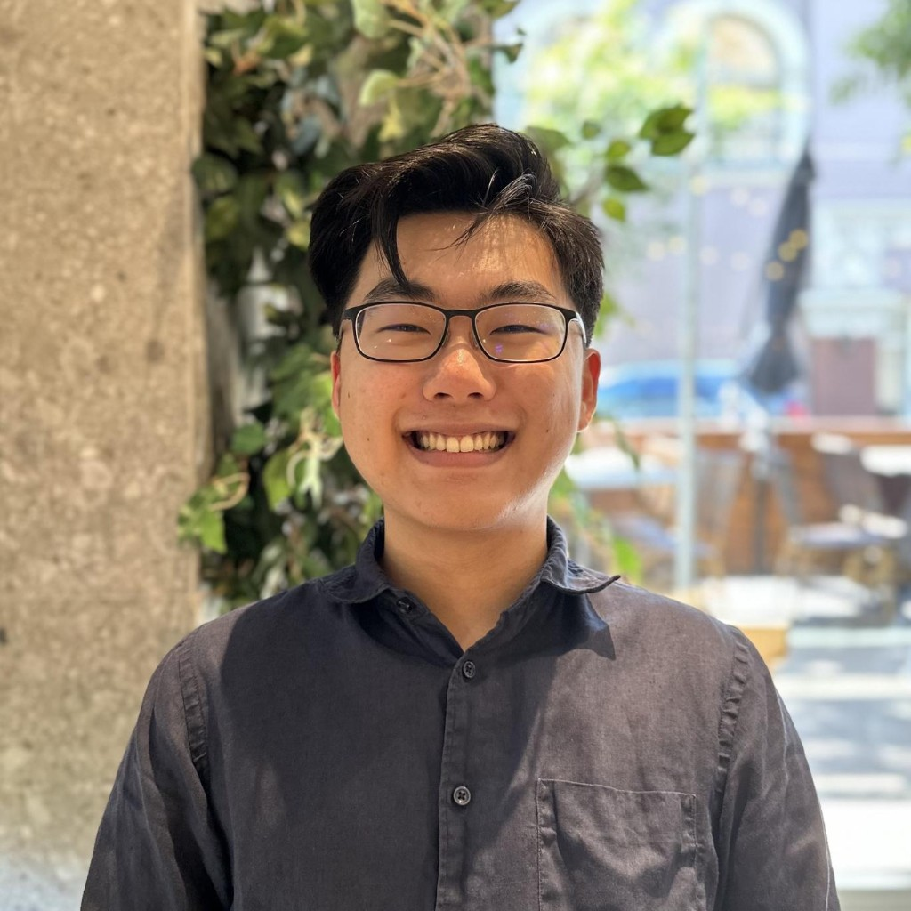

Blackwell Approachability and Gradient Equilibrium are Equivalent.
Manuscript.

I am a second-year PhD student at BAIR, where I am lucky to work with Nika Haghtalab and Mike Jordan. I like machine learning theory and the foundations of probability. Before Berkeley, I did my BS and MS at Penn, where I had the privilege of working with Nik Matni.
Email: bl.ee AT berkeley DOT edu
I help organize the CLIMB seminar. Please reach out if you'd like to give a talk!
In my field, authors are ordered alphabetically by last name.
Blackwell Approachability and Gradient Equilibrium are Equivalent.
Manuscript.
Panprediction: Optimal Predictions for Any Downstream Task and Loss.
AISTATS 2026 (Oral).
Single Trajectory Conformal Prediction.
IEEE CDC 2024.